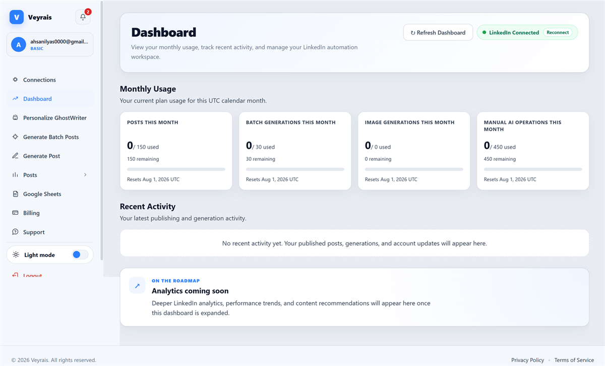

What automation actually does for a business like yours
Every business below had the same problem you probably have: leads and calls slipping away while the team stayed busy. Here is what changed after we automated the leak, the specific numbers, and the systems behind them. Four industries, one pattern: answer faster, miss nothing, hand your team back their time.
A note on honesty: the studies below are representative examples built from the real outcome ranges we work toward and that are typical across our industry. Client names are withheld or anonymized for privacy. As we publish named client results with permission, they will replace these examples. We would rather show you realistic numbers than inflated ones.

A brokerage stopped losing evening leads to faster competitors
The problem
Enquiries from Zillow and their IDX site arrived all evening, but agents were showing homes or off the clock. The average first reply took over four hours, and by then buyers had already spoken to whoever answered first. Agents also lost their mornings to catch up admin instead of selling.
What we built
An instant lead response system that replied to every enquiry in under 90 seconds referencing the exact listing, an AI phone agent that booked viewings after hours, and automated follow up sequences that paused the moment a lead replied. Everything synced to their existing CRM.
A clinic cut no shows and stopped missing calls during appointments
The problem
The front desk could not answer the phone and check in patients at the same time, so a third of calls went unanswered during busy hours. No shows sat around 15%, leaving providers paid to wait, and reminder calls ate hours of staff time every day.
What we built
A HIPAA compliant AI phone agent that answered every call and booked appointments around the clock, a two touch reminder system across the patient's preferred channel, and automatic waitlist backfill that filled cancellations instantly. Anything clinical routed straight to staff.


A brand recovered abandoned carts and cut support tickets in half
The problem
Most shoppers added items and left, and the generic recovery emails barely got opened. Meanwhile the support inbox overflowed with where is my order questions that pulled the small team away from real problems.
What we built
A conversational cart recovery flow triggered by real shopper behavior across email and WhatsApp, plus a support chatbot trained on their policies and order data that answered status questions instantly and handed complex issues to a human. Connected to Shopify and their support desk.
A firm rescued after hours calls and grew case intake without new hires
The problem
Potential clients called while the team was in court or after hours, and roughly a third of those calls went to voicemail. Most callers never left a message, they simply called the next firm. Intake was inconsistent and hard to track.
What we built
An AI intake agent that answered every call, captured case details, screened for conflicts and fit, and booked qualified consultations straight into the calendar. Every caller got an instant text back, and the team received a summary before each consultation.


Veyrais: the automation we built for ourselves
We had the same bottleneck our clients have: consistent LinkedIn posting always lost to urgent work. So we ran our own process on ourselves and built Veyrais, an AI ghostwriter that writes in our voice, pulls live trends, schedules a month of content in bulk, and publishes on autopilot with a review step.
Every post you see from us on LinkedIn went through this system. Unlike the anonymized studies above, you can inspect this one yourself.
Your business is the next case study
Every result on this page started with a free audit that found the biggest leak first. We will do the same for you: map where your leads, calls, and admin time are slipping away, then show you which automation recovers the most, fastest.
Book Your Free Automation AuditThirty minutes, a written roadmap, zero obligation.
What to expect, honestly
How fast can I expect results from automation?
A single automation such as lead response or an AI phone agent often ships in one to two weeks, and most businesses see measurable results within the first month, usually through recovered leads and calls that were previously missed.
What kind of return on investment is realistic?
Most focused builds pay for themselves within the first quarter. The return comes from recovered revenue: faster lead response that converts more deals, fewer no shows, rescued missed calls, and hours of admin time handed back to staff.
Will automation replace my team?
No. In every project, automation handles the repetitive, time sensitive work and hands off anything that needs human judgment. Teams keep the same headcount and spend their time on higher value work instead of admin.
Explore our automation services, the industries we serve, or read the blog for practical guides. Ready to start? Book a free audit.